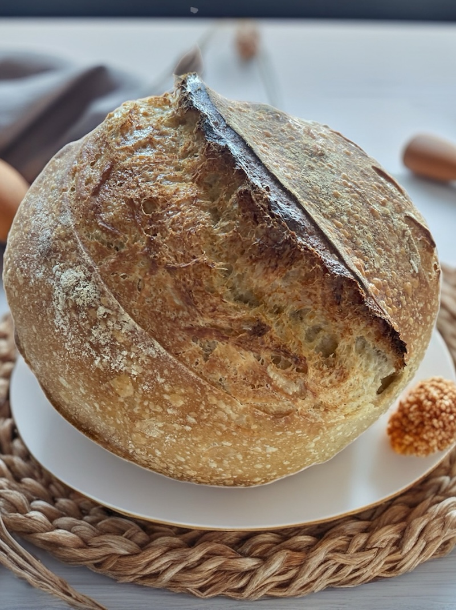
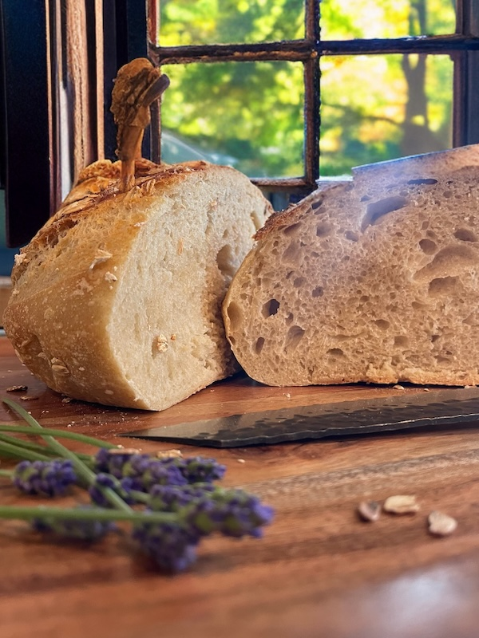

The goodness of homemade sourdough –
delivered to your door!


At Blessed by Bread, we believe bread should be simple, wholesome, and unforgettable. Every loaf is thoughtfully made in small batches, fermented with patience, and baked with love—using only the finest ingredients. No shortcuts, no additives, just real bread the way nature intended. We blend traditional methods with modern precision— fermenting slowly, mixing thoroughly, and baking with a watchful eye. Because great bread isn’t just made; it’s tended to.
Meet Lise
I'm Lise – baker, mom, and grandmother, crafting sourdough loaves with heart from my home kitchen in Leesburg. Every loaf is made with care, patience, and a whole lot of love.
Read my story →Why Sourdough Is the Better Choice
- Easier to digest thanks to long fermentation.
- Lower glycemic impact for steady energy.
- No additives—just flour, water, salt, and time.
- Deep flavor developed slowly and naturally.
Ready to order?
Order by Tuesday evening for Thursday and Friday delivery across Loudoun County.